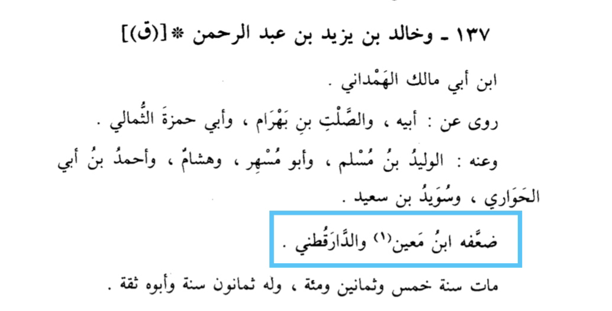
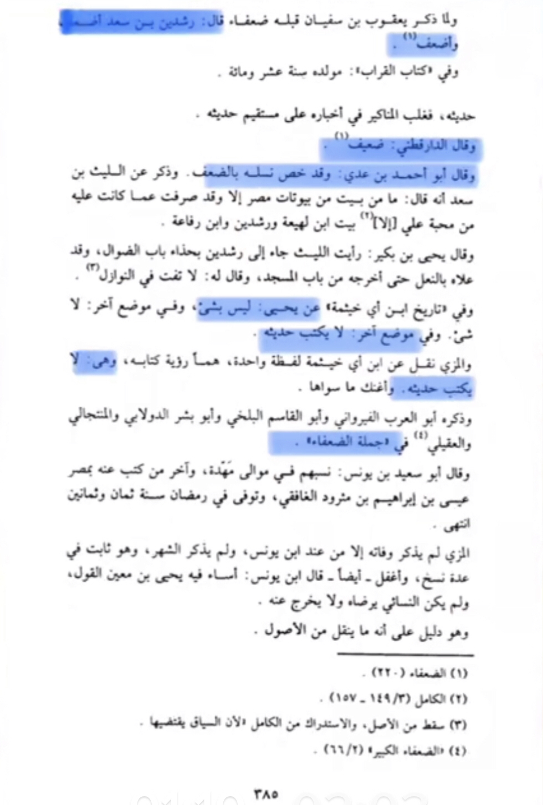

First off the 72 hoories
That is a hadith mentioned in ibn majah and tirmidhi
The first one in ibn majah 4337 contain khalid bin Yazid is he weak?
Translation: “Khalid bin Yazid bin abi malik was weakned by Ibn maain and Al-Darakutni”
-Source: The Lives of Noble Figures Al-Dhahabi volume 9 page number 413 person number 137
by name “Khalid bin Yazid bin abdulrahman bin Abi malik Al-Hamdani”

The other one in tirmidhi contains rushda’in bin sa’d is he weak
Let see what they said about him in tahzib al-kamal

Both hadith were weakned by Darussalam
The one in ibn majah was also weakned by al-arna’ut in his tahquiq
For more check :
Now lets see the argument of lustful why would you need that in paradise and are they sex slaves.
First of all no hoories are wives not adultery (44:54) , second it is not open check tafsir al-Qurtubi (55:72)
everyone do it in their place not in open. Now people claim this is the only thing we will be doing in paradise.
The prophet said
Sahih al-Bukhari 4779
Narrated Abu Huraira:
Allah's Messenger (ﷺ) said, "Allah said, 'I have prepared for my pious worshipers such things as no eye
has ever seen, no ear has ever heard of, and nobody has ever thought of." Abu Huraira added: If you wish you can
read:-- 'No soul knows what is kept hidden (in reserve) for them of joy as reward for what they used to do.' 32.17.
Now this isn’t the only thing we be doing we will also be doing a lot of other things like seeing Gods face
that is the best thing there. Another important thing is that sex isn’t something unpure it is pure if under Gods
legislation. So this is a pleasure of this world what wouldn’t I not want it there ? Another important thing is
we don’t care about the Christians view of paradise it isn’t authoritative over us
Now for the Question what for women
First off women in nature don’t want multiple husbands and stuff that is there nature , however if a women
isn’t married ibn uthaymeen said she would be married to someone in paradise nobody is single there